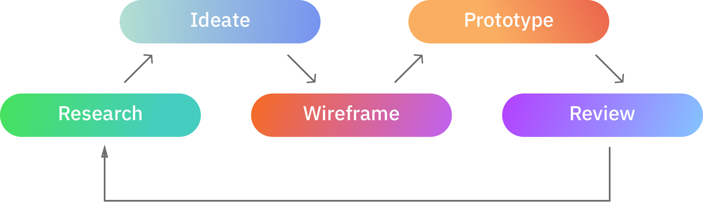

Rescue Me
Overview
An emergency first response app to help people during natural disasters.
Inspired by the 2018 Kerala Floods.
Roles
User Experience Designer
User Interface Designer
Timeline
August 2018

Introduction
Kerala, a state in the south-western part of India, is often termed as “God’s Own Country” due to its lush green pastures and idyllic backwaters. As Kerala lies in the tropic region it is mostly subjected to humid tropical wet climate experienced by most of Earth’s rainforests.
Most of the rainfall occurs during the monsoon season which is characterized by the southwest and northeast monsoons. The southwest monsoon is a climatological pattern that affects the coasts of Kerala and Maharashtra in the months of June and July. As per the meteorological center in Thiruvananthapuram, it is noted that the actual rainfall in the southwest monsoon period is usually in the ranges of 1855 mm to 2040 mm.
Problem
In July 2018, the arrival of the southwest monsoon brought unusually high amounts of rainfall. Researchers say that Kerala received heavy monsoon rainfall which is about 257% more than the usual rain falling in Kerala. This unprecedented amount of rainfall had affected the state — causing major flooding in 13 out of the 14 districts. With the dams filling to capacity, 35 of the states 54 dams were opened.
Due to intense flooding throughout the entire state, hundreds of villages were affected and thousands of homes had been destroyed. Over 10,000 kilometers of roads were damaged. In addition to this, train and bus services were suspended.
During 2018 Kerala Floods, I noticed that people were uploading videos on social media sites asking for help and aid. I would like to point out that people needed to find help. It can be said that the key to survival for a lot of people was the massive rescue and relief operations by the National Disaster Response Force and the National Disaster Management Authority, but the rescue efforts cannot connect all of the remote areas. Inspired by this, I got an idea to create “Rescue Me” - a mobile application that could help people affected by natural disasters.
My goal was to create an app that could be used for all kinds of natural calamities.
I researched the three major needs for the survival of people. They are:
1. Rescue and Shelters
2. Supply of Food and Medicine
3. Communication and ways to reach authorities
Solution
My proposed solution comprises a mobile application which allows people to be alerted when a natural disaster is about to happen as well as provide emergency services for people who are affected by said disasters.
Since almost every smartphone has an inbuilt GPS chip it is possible to receive satellite signals and calculate position. This allows for the user to find out shelters and also get notified about rescue operations.
It can also be said normal telephone networks are affected during disasters. For this reason, I propose that the app can provide a decentralized peer network, which allows for mobility. Users of the app can find communicate with each other and share essential information — such as the distribution of food and medical resources.
The app provides users to volunteer in two ways:
1. People can actively be involved in setting up and managing shelters
2. People can donate items such as food, clothing, and money
Design Process

User Flow defines the process of how the end user is going to use the application. In the case of a disaster, the user seeks help. As previously defined, there are three major needs. The app is built around those three essential needs and provides a way for the user to avail these needs as services.

User Personas

Consider the case of Murali. His hometown is flooded and his house has collapsed. With the advancing rains and flooding Murali has to find a place to stay and needs food and medication to survive. Murali’s technical skill is low, so it is not possible for him to look at complex interfaces and find out what to do. Thus, we must design an interface that is simple to use and understand. Meaning that we have to design an interface with cognitive load.
Divya monitors one of the relief centers in Kochi. By using “Rescue Me”, Divya can help out other people through the communication channel - again, a decentralized network that is based on peer-to-peer interactions. Based on the localized activity in her region, she can communicate with other people who use the app to donate food and medical supplies. By using the communication channel, Divya is able to find Murali’s request for aid. Using this, she can get in touch with Murali and provide help.
Lo-Fi Prototypes
Initially, I used Sketch to design the low fidelity prototype to understand the different components and screens in the app. I followed a two-tabbed layout. The first tab shows all services pertaining to help, aid, and rescue while the second tab shows the communication channel.


This layout is easy to understand but complicates the interface as users have to go through multiple menus to find the services and request for food/medical supplies and shelter. This is also when I was reading about cognitive overload. Considering the large number of users who are in a disaster situation, it is not user-friendly to design an app with multiple menus as it complicates the user’s actions.
Hi-Fi Prototypes
Here, I've showcased the high fidelity design of the app. The first iteration of the app uses the older design, a two-tabbed design with large images for users to understand the types of services that they will avail.
As is with the case of cognitive overload, I decided to simplify the interface by reducing the menus in such as way that all services could be accessed within three clicks.